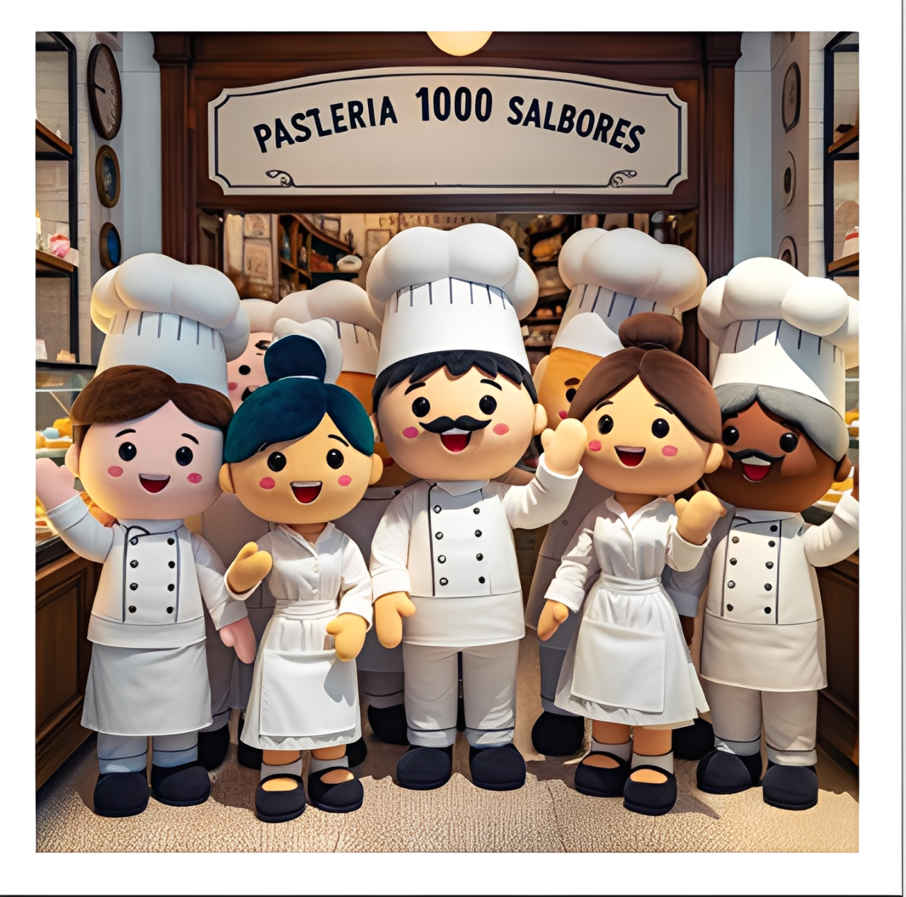

Nosotros
Misión: Ofrecer una experiencia dulce y memorable a nuestros clientes...
Visión: Convertirnos en la tienda online líder de productos de repostería en Chile...
Historia: Pastelería 1000 Sabores celebra su 50 aniversario como un referente en la repostería chilena.
Famosa por su participación en un récord Guinness en 1995, cuando colaboró en la creación de la torta más grande del mundo, la pastelería busca renovar su sistema de ventas online para ofrecer una experiencia de compra moderna y accesible para sus clientes.
Valores: Calidad, tradición, innovación, comunidad.